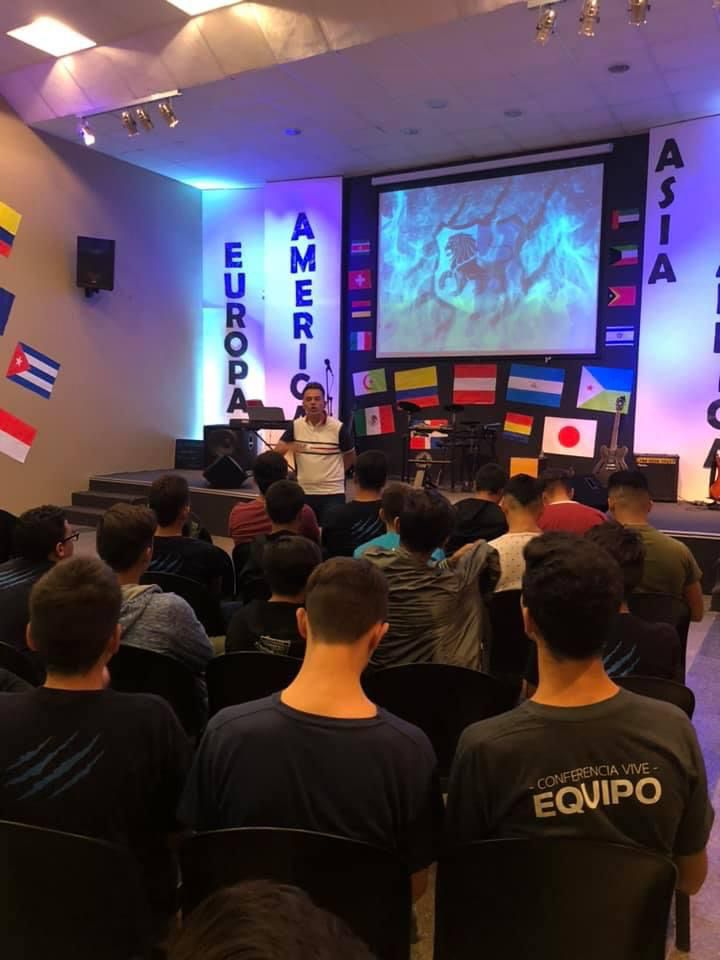

Ministerios
Club Biblico



Contamos con una actividad para adolescentes entre 12 y 18 años. Donde compartimos tardes con mucha diversión, y una enseñanza práctica de la Biblia para nuestras vidas. Te esperamos los días sábados a partir de las 18:00 hs.
Matrimonios


Un tiempo especial para parejas, con o sin hijos. Una vez al mes disfrutaremos de un tiempo preparado especialmente para nosotros.
Omega Kids


Un espacio pensado para niños de entre 8 a 12 años, vamos a encontrar juegos, canciones, una rica comida y sobre todo un tiempo con la Palabra de Dios.